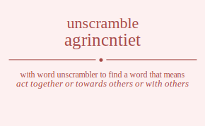

The word found after unscrambling agrincntiet means that act together or towards others or with others, .
agrincntiet has jumble solution. Please see which words made after unscrambling agrincntiet.
Daily Jumble Solution: interacting
You can use following links to see other word jumble solutions for the same day
agrincntiet cinwe gawre pllete vtanie

Unscrambled 11 letter words from agrincntiet
interacting
Unscrambled 10 letter words from agrincntiet
intreating
intragenic
Unscrambled 9 letter words from agrincntiet
retinting
intrigant
nitrating
itinerant
integrant
nattering
rattening
iterating
retaining
nictating
intricate
carnitine
cantering
recanting
antigenic
Unscrambled 8 letter words from agrincntiet
tincting
centring
reciting
enticing
attiring
tainting
training
intranet
triennia
gnattier
treating
arginine
incitant
trancing
granitic
interact
argentic
catering
creating
reacting
enacting
recaning
reaginic
Unscrambled 7 letter words from agrincntiet
tinting
trining
nitrite
nittier
tinnier
gittern
retting
netting
tenting
renting
ringent
igniter
tiering
ginnier
reining
tricing
cittern
citrine
crinite
inciter
neritic
cinerin
intrant
ratting
tarting
ranting
airting
ingrain
raining
entrant
intreat
iterant
nattier
nitrate
tertian
entrain
inertia
tangent
regnant
granite
gratine
ingrate
tangier
tearing
anteing
antigen
gentian
aginner
earning
engrain
grannie
nearing
tantric
titanic
catting
carting
crating
tracing
canting
craning
atretic
cattier
citrate
nictate
tetanic
ceratin
certain
creatin
tacrine
ancient
cannier
narcein
cigaret
anergic
Unscrambled 6 letter words from agrincntiet
gittin
tiring
tining
retint
tinter
intent
intern
tinner
tinier
intine
engirt
ginner
ignite
tieing
citrin
nitric
citing
ricing
cretin
incent
incite
irenic
cering
cringe
titian
gratin
rating
taring
anting
airing
natter
ratten
tenant
tanner
attire
ratite
ratine
retain
retina
innate
inaner
narine
target
argent
garnet
gannet
aigret
gaiter
triage
eating
ingate
earing
gainer
reagin
regain
regina
innage
intact
incant
tannic
iatric
niacin
tragic
acting
arcing
caring
racing
caning
canter
carnet
centra
nectar
recant
tanrec
trance
canner
cattie
acetin
centai
enatic
carnie
canine
cannie
encina
cagier
incage
Unscrambled 5 letter words from agrincntiet
iring
tetri
titer
titre
trite
inert
inter
niter
nitre
trine
inner
renin
tiger
tinge
reign
renig
genii
tinct
ricin
icing
citer
recit
recti
trice
nicer
icier
genic
trait
taint
titan
riant
train
grant
tragi
giant
garni
grain
tater
tetra
treat
antre
anent
irate
retia
terai
entia
tenia
tinea
inane
gater
grate
great
retag
targe
terga
agent
anger
range
regna
tract
attic
tacit
triac
actin
antic
cairn
naric
acini
cigar
acing
tacet
tecta
caret
carte
cater
crate
react
recta
trace
enact
caner
crane
nacre
rance
nance
areic
ceria
erica
cager
grace
Unscrambled 4 letter words from agrincntiet
tint
titi
inti
girt
grit
trig
ting
girn
grin
ring
tret
nett
tent
rent
tern
rite
tier
tire
nite
tine
rein
nine
gent
gite
gien
crit
cent
cite
etic
cire
rice
cine
nice
tart
rant
tarn
airt
anti
tain
airn
rain
rani
inia
grat
gnat
tang
gnar
gran
rang
gait
ragi
agin
gain
tate
teat
rate
tare
tear
ante
etna
neat
earn
near
gate
geta
ager
gear
rage
gaen
gane
tact
cart
cant
carn
narc
cain
crag
cate
tace
acre
care
race
acne
cane
cage
Unscrambled 3 letter words from agrincntiet
tit
nit
tin
rin
inn
git
rig
gin
tet
ret
net
ten
ern
tie
ire
rei
get
teg
erg
reg
eng
gen
neg
gie
tic
cig
rec
ice
att
tat
art
rat
tar
ant
tan
ran
nan
ait
air
rai
ria
ain
ani
gat
tag
gar
rag
gan
nag
ate
eat
eta
tae
tea
are
ear
era
ane
nae
age
gae
act
cat
arc
car
can
ace
Unscrambled 2 letter words from agrincntiet
it
ti
in
et
er
re
en
ne
at
ta
ar
an
na
ai
ag
ae